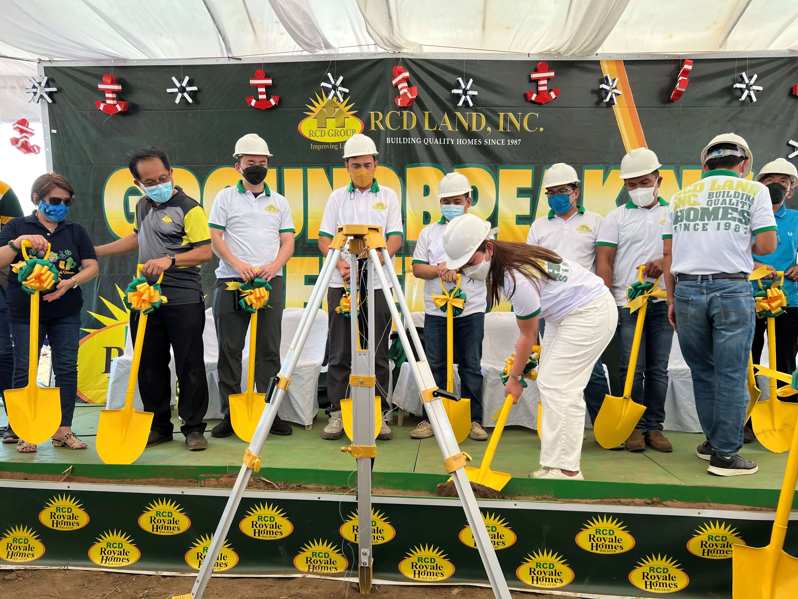
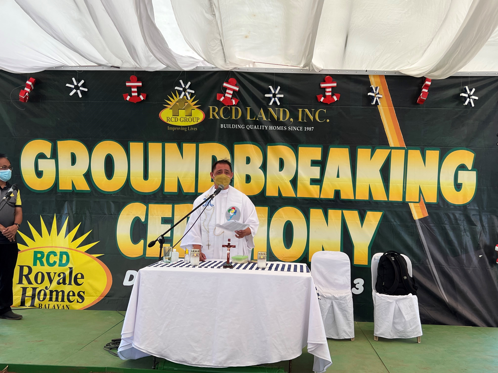
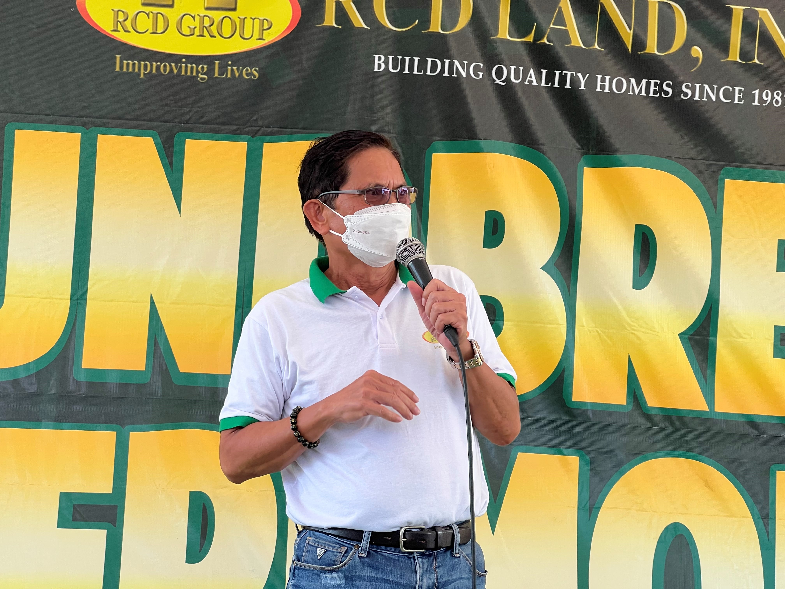
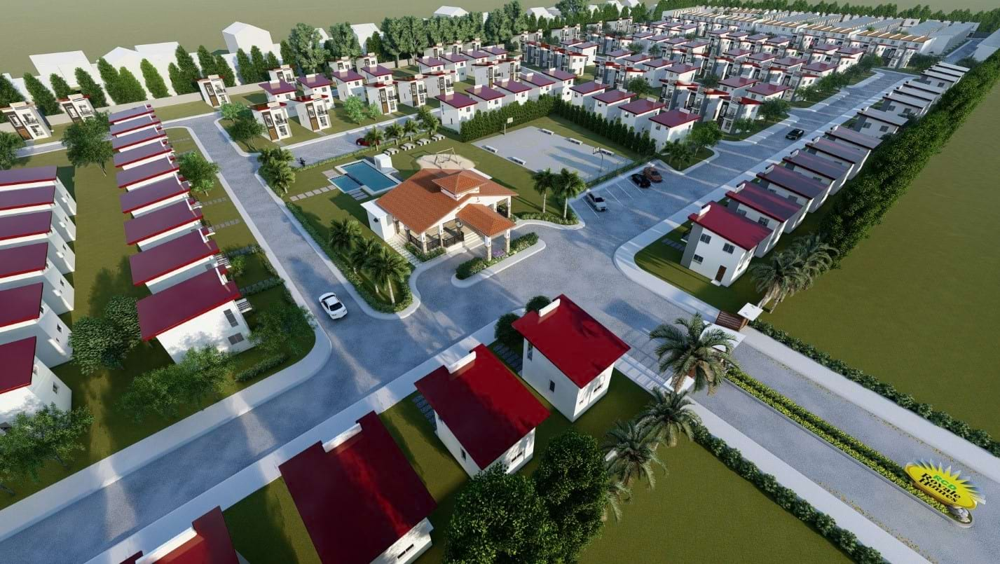

<section class="mt-[81px] py-20 bg-[#f7f7f7]">
    <div class="max-w-7xl mx-auto px-4">

        <!-- Section Header -->
        <div class="mb-12">
            <div class="max-w-5xl mx-auto flex items-start space-x-4">
                <div class="w-1 h-40 bg-green-500"></div>
                <div>
                    <h2 class="text-4xl font-bold text-gray-800">Expanding Horizons: RCD Royale Homes launches in
                        Balayan, Batangas
                    </h2>
                    <p class="text-gray-600 text-base mt-1 max-w-2xl">
                        After more than 2 years of being enclosed on screens and virtual events, RCD Land held its first
                        face-to-face event to make way for the Groundbreaking and Launching of RCD Royale Homes Balayan!
                    </p>
                </div>
            </div>
        </div>

        <!-- Centered Photo -->
        <div class="flex justify-center my-12">
            
        </div>

        <!-- Author/Meta Info -->
        <div class="flex justify-center mb-8">
            <span class="text-sm text-gray-700">
                <span class="font-semibold">Author:</span> Nicole Dizon&nbsp;&nbsp;
                <span class="font-semibold">Category:</span> Ground Breaking &nbsp;&nbsp;
                <span class="font-semibold">Date:</span> <span>April 24, 2022</span>
            </span>
        </div>

        <!-- Article Content -->
        <div class="max-w-3xl mx-auto text-gray-700 text-sm leading-relaxed px-4">
            <p>
                All sellers had the chance to qualify to this promo for all sales reservations made within the period of
                July 1 to August 31, 2021. It is to note that 1 million worth of sales reservation on RCD Land projects
                equates to one (1) raffle entry to the unli grocery hakot. The winner was chosen through the spin the
                wheel application
            </p>
            <p class="mt-6">
                A motorcade of 32 vehicles served as the jumpstart of the event, with a 10-km route from the project’s
                site to the Balayan town proper. This is immediately followed by a holy mass and the blessing of the
                property headed by Fr. Albert Guiritan.
            </p>

            <!-- Centered Photo -->
            <div class="flex justify-center my-12">
                
            </div>

            <p class="mt-6">
                And of course, the ceremonial dig and capsule laying ceremony took place to commemorate the newest
                project, which was done by the executives of RCD Land and officers of Balayan.
            </p>
            <h3 class="text-base font-semibold mt-8 mb-4">BALAYAN AS A PROMISING LOCATION OF GROWTH AND DEVELOPMENT </h3>

            <p class="mt-6">
                Fulfilling its promise to improve the lives of Filipinos by providing quality and affordable homes, RCD
                Land continues to develop housing communities in locations outside Metro Manila that remain accessible
                to the city. Balayan is a fast-progressing municipality that continues to grow in population with its
                visionary developments, thus giving rise to the demand for affordable housing for its people.
            </p>
            <p class="mt-6">
                Roland Delantar, President and CEO of RCD Land, Inc., stated that, “With the continuous risks of the
                pandemic, it’s indeed understandable if many of you wouldn’t come. But I was indeed surprised with how
                many of you are here with us today. It is indeed heartwarming to see all of you and I would like to
                extend my sincerest gratitude to you all.”
            </p>

            <!-- Centered Photo -->
            <div class="flex justify-center my-12">
                
            </div>

            <p class="mt-6">
                He also extended his vision plan for the newest RCD Land project, “Balayan is a place of continuous
                progress and growth. Our site is just 2km away from the government center of Balayan which houses
                various offices such as the SSS, GSIS, LTO, etc. We are also very near to beaches and other tourist
                spots which makes our houses here the perfect vacation home. With this, we are excited to be part of the
                development and launch RCD Royale Homes Balayan. Our plan here is to provide bigger cuts of lot at
                120sqm for our single-detached units and we’ll also have townhouses which are the more affordable
                option. Nevertheless, all units aim to provide quality homes to the people at such reasonable prices.”
            </p>
            <h3 class="text-base font-semibold mt-8 mb-4">RCD ROYALE HOMES BALAYAN: PROJECT SPECIFICATIONS AND DETAILS
            </h3>

            <p class="mt-6">
                RCD Royale Homes Balayan is an 80,141 sqm subdivision which will have a total of 479 units, 298 of which
                are single detached and 181 units will be townhouses. The community is near and accessible to
                establishments such as the Balayan Government Center, Waltermart Balayan, Matabungkay and Calatagan
                beaches, and many more.
            </p>

            <!-- Centered Photo -->
            <div class="flex justify-center my-12">
                
            </div>


            <p class="mt-6">
                The community is well-planned, complete with amenities such as a guarded entrance gate, a basketball
                court, a swimming pool, a clubhouse, and parks and playgrounds. Modern-designed townhouses and
                single-detached homes are expected to rise in the area, all reasonably priced and intended for the
                middle-segment earners.
            </p>

            <p class="mt-6">
                RCD Land welcomes you to RCD Royale Homes Balayan – the home your family deserves to enjoy!
            </p>
            <p class="mt-6">
                For inquiries about RCD Royale Homes Bataan, you may visit us at our Facebook page at
                @RCDRoyaleHomesBalayan or contact us at (02) 617 5364 or 0917 700 1109.
            </p>